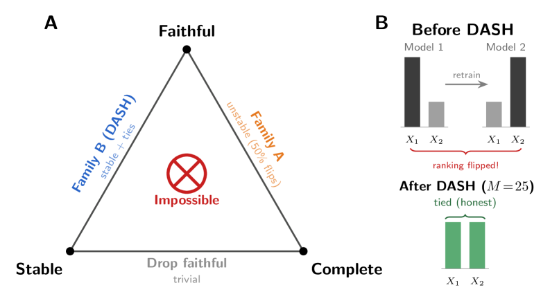
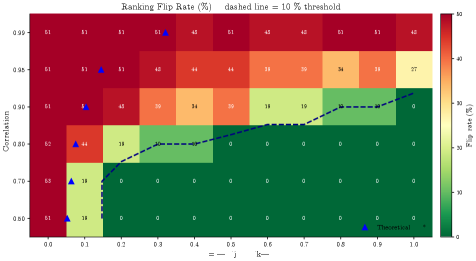

Machine-verifies an explainable-AI impossibility result with 305 Lean 4 theorems.
Abstract
No feature ranking can be simultaneously faithful, stable, and complete when features are collinear. For collinear pairs, ranking reduces to a coin flip. We prove this impossibility, quantify it for four model classes, resolve it via ensemble averaging (DASH), and machine-verify it with 305 Lean 4 theorems. We characterize the complete attribution design space: exactly two families of methods exist -- faithful-complete methods (unstable, with rankings that flip up to 50% of the time) and ensemble methods like DASH (stable, reporting ties for symmetric features) -- and no method lies outside this dichotomy. The impossibility is quantitative: the attribution ratio diverges as 1/(1-rho^2) for gradient boosting, is infinite for Lasso, and converges for random forests. DASH (Diversified Aggregation of SHAP) is provably Pareto-optimal among unbiased aggregations, achieving the Cramer-Rao variance bound with a tight ensemble size formula. In a survey of 77 public datasets, 68% exhibit attribution instability. Switching to conditional SHAP does not escape the impossibility when features have equal causal effects. The framework includes practical diagnostics -- a Z-test workflow and single-model screening tool -- and has direct consequences for fairness auditing: SHAP-based proxy discrimination audits are provably unreliable under collinearity. The design space theorem, diagnostics, and impossibility are mechanically verified in Lean 4 (305 theorems from 16 axioms, 0 sorry) -- to our knowledge, the first formally verified impossibility in explainable AI.
Problem
SHAP feature importance rankings are unreliable when features are correlated: retraining with a different random seed can invert which feature is ranked most important. In a survey of 77 public datasets, 68% exhibit this instability. It is unclear whether this is an engineering limitation or a fundamental impossibility.
Approach
The authors prove a mathematical impossibility theorem: no feature ranking can simultaneously be faithful (reflect the model), stable (robust to retraining), and complete (rank all features) under collinearity. They characterize the complete design space as exactly two families of methods, propose DASH (ensemble averaging) as a resolution, and machine-verify the framework with 305 Lean 4 theorems from 16 axioms with 0 sorry across 54 files.

Figure 1 : The Attribution Impossibility. No feature ranking can be simultaneously faithful, stable, and complete under collinearity. Faithful, Stable, Complete: Pick Two. Family \mathcal{A} (single-model) is faithful and complete but rankings flip up to 50% of the time. Family \mathcal{B} ( Dash ensemble) is stable with zero unfaithfulness but reports ties for symmetric features (sacrificing comp
Results
The impossibility is fundamental, not an engineering failure. Exactly two method families exist: faithful-complete but unstable (rankings flip up to 50% of the time), and ensemble methods (DASH) that are stable with zero unfaithfulness but report ties for symmetric features. The Lean formalization caught two logical inconsistencies that survived informal review.

Figure 4 : Flip rate as a function of (\rho,\Delta\beta) . The impossibility region (dark) expands with \rho . At \rho\geq 0.95 , instability persists for all \Delta\beta\leq 1 .